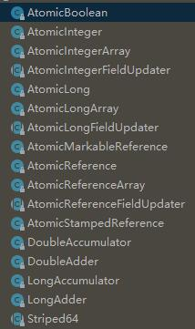

一些概念并发级别java多线程的一些特性线程的状态线程的基本操作wait和notifysuspend和resumejoin和yeildvolatile关键字synchronized关键字同步控制重入锁 ReentrantLock信号量 Semaphore读写锁 ReentrantReadWriteLock倒数计数器 CountDownLatch循环栅栏 CyclicBarrier线程阻塞工具类 LockSupport线程池为什么要用线程池JDK提供了对线程池的支持固定大小的线程池计划任务JDK的并发容器ConcurrentHashMapCopyOnWriteArrayListConcurrentLinkedQueueArrayBlockingQueueLinkedBlockingQueuePriorityBlockingQueueConcurrentSkipListMapThreadLocalCAS原子类多线程常用设计模式Future模式Master-Worker模式Guarded Suspeionsion模式不变模式生产者-消费者模式
一些概念
同步
调用一个方法，调用者必须等待方法执行结束，才能继续向下执行。
异步
xxxxxxxxxx调用一个方法，该方法立即返回，调用方继续向下执行，异步方法通常在另外一个线程中执行。
并发
xxxxxxxxxx多个任务是交替执行的，一会执行A任务 一会执行B任务。
并行
xxxxxxxxxx多个任务同时执行，真正的并行只能出现在拥有多个cpu核心的机器上。
临界区
xxxxxxxxxx表示公共资源或者共享数据可以被多个线程共享，但是每次只有一个线程可以使用，其他线程要使用就必须等待。
阻塞
xxxxxxxxxx一个线程占用了临界区资源，其他要使用临界区资源的线程就必须等待，等待就会导致程序挂起，这种情况就说阻塞。
非阻塞
xxxxxxxxxx没有一个线程可以阻止其他线程执行，所有线程不断尝试向前执行。
死锁
xxxxxxxxxx死锁是指两个或两个以上的线程在执行过程中，由于竞争资源或者由于彼此通信而造成的一种阻塞的现象，若无外力作用，它们都将无法推进下去。简单的说就是多个线程在相互等待。
饥饿
xxxxxxxxxx指一个线程或者多个线程一直无法获得所需要的资源，导致一直无法执行。比如这个线程的优先级比较低，总是被优先级高的线程抢占资源。
活锁
x多个线程相互协作为了彼此间的响应而相互礼让，使得没有一个线程能够继续前进，那么就发生了活锁。好比两个过于礼貌的人在半路相遇，出于礼貌他们相互礼让，避开对方的路，但是在另一条路上又相遇了。就这样，不停地一直避让下去。。。。
并发级别
阻塞
xxxxxxxxxx在其他线程释放资源之前，当前线程无法执行，比如当我们使用sychronized关键字或者重入锁时，我们得到的线程就是阻塞的。
无饥饿
xxxxxxxxxx如果获得锁不是公平的，就有可能导致优先级低的线程产生饥饿，如果获得锁是公平的，每个线程都有机会获得锁，就不会产生饥饿。
无障碍
xxxxxxxxxx线程不会因为临界区的问题导致一方被挂起，也是是说每个线程都可以进入临界区。如果共享数据被修改坏了就回滚自己的操作，确保数据的安全。
无锁
xxxxxxxxxx无锁的并行都是无障碍的，所有的线程都可以对临界区进行访问，无锁的并发保证必然有一个线程能够在有限的步数内操作完成离开临界区。在无锁的调用中，一个典型的特点就是可能会包含一个无限的循环不断的修改共享变量，如果没有冲突，修改成功就退出，否则继续尝试修改。
无等待
xxxxxxxxxx无等待是在无锁的基础上进一步扩展，要求所用的线程必须在有限步内完成。
java多线程的一些特性
原子性
xxxxxxxxxx一个操作不可以被中断，即使是多个线程一起执行，一个操作一旦开始，就不会被其他线程干扰。
可见性
xxxxxxxxxx当一个线程修改了某个共享变量的值，其他线程是否能立刻知道这个修改。如果在串行执行的程序中，这个问题不存在。但在多线程中，由于缓存优化或者硬件优化，或者指令重排，都可能导致一个线程的修改不会被其他线程察觉。
有序性
xxxxxxxxxx在并发时，程序的执行可能会出现乱序。
线程的状态

新建状态(New)
线程对象被创建后，就进入了新建状态。例如，Thread thread = new Thread()。
- 就绪状态(Runnable)
xxxxxxxxxx也被称为“可执行状态”。线程对象被创建后，其它线程调用了该对象的start()方法，从而来启动该线程。例如，thread.start()。处于就绪状态的线程，随时可能被CPU调度执行。
运行状态(Running)
线程获取CPU权限进行执行。需要注意的是，线程只能从就绪状态进入到运行状态。
阻塞状态(Blocked)
阻塞状态是线程因为某种原因放弃CPU使用权，暂时停止运行。直到线程进入就绪状态，才有机会转到运行状态。阻塞的情况分三种：
xxxxxxxxxx(01) 等待阻塞 -- 通过调用线程的wait()方法，让线程等待某工作的完成。(02) 同步阻塞 -- 线程在获取synchronized同步锁失败(因为锁被其它线程所占用)，它会进入同步阻塞状态。(03) 其他阻塞 -- 通过调用线程的sleep()或join()或发出了I/O请求时，线程会进入到阻塞状态。当sleep()状态超时、join()等待线程终止或者超时、或者I/O处理完毕时，线程重新转入就绪状态。
死亡状态(Dead)
线程执行完了或者因异常退出了run()方法，该线程结束生命周期。
线程的基本操作
创建线程：
xxxxxxxxxx继承Thread类实现Runable接口
启动线程：
xxxxxxxxxx调用线程的start()方法启动线程。
停止线程：
xxxxxxxxxx调用stop()方法停止一个线程。stop()方法在结束线程时会直接终止线程，并且释放这个线程持有的锁，而这些锁正好是用来维护数据一致性的，强行终止就会造成数据不一致的情况，一般情况下我门不用stop()方法。
中断线程：
xxxxxxxxxx中断是一种重要的线程协作机制。线程中断不会使程序退出，而是通知目标线程，有其他线程想中断你。interrupt()通知目标线程中断，设置标志位isInterrupted()判断是否被中断interrupted() 类方法 判断中断状态并清除标志位。
wait和notify
- 当一个线程调用一个对象实例的wait()方法时，当前线程就会在这个对象上等待。只有当其他线程调用了该对象的notify()方法后，才能继续执行。
- 这样的Object就成了多个线程通信的有效手段。
- wait()和notify()方法必须包含在synchronized语句中。
- 在调用wait()方法前必须获得object对象的监视器，而wait()方法在执行后，会释放这个监视器，使其他线程能够获得这个对象的监视器继续执行。
xxxxxxxxxxpublic class WaitDemo{ private static Object object = new Object(); private static class T1 extends Thread{ public void run() { synchronized (object){ System.out.println("我歇会。。。"); try { object.wait(); } catch (InterruptedException e) { e.printStackTrace(); } System.out.println("我擦，又让我执行。"); } } } private static class T2 extends Thread{ public void run() { synchronized (object){ System.out.println("通知另外一个线程干活。。。"); object.notify(); } } } public static void main(String[] args) throws InterruptedException { Thread t1 = new T1(); Thread t2 = new T2(); t1.start(); Thread.sleep(3000l); t2.start(); }}
suspend和resume
- suspend()方法使当前线程挂起，resume使线程继续执行。
- 这两个方法被标注位过时的方法。不推荐使用。
- suspend()使线程挂起的时候，并不释放锁的资源，导致其他线程无法获取被这个线程占用的锁，导致无法正常执行。
- 如果resume()意外的在suspend()之前执行，那么这个线程就很难再执行下去，并且锁也不会释放，导致其他线程都在等待，就会导致真个系统不正常。
join和yeild
- t.join()方法阻塞调用此方法的线程(calling thread)，直到线程t完成，此线程再继续
- yield()让当前正在运行的线程回到可运行状态，以允许具有相同优先级的其他线程获得运行的机会。但是，实际中无法保证yield()达到让步的目的，因为，让步的线程可能被线程调度程序再次选中。
volatile关键字
- 当用volatile关键字修饰一个变量时，确保这个变量被修改后，能够别其他线程感知到。
- volatile虽然对于保证操作的原子性有很大帮助，但是并不能替代锁，无法保证复合操作的原子性。
- volatile也能保证数据的可见性和有序性。
synchronized关键字
指定加锁对象：
对给定对象加锁，进入同步代码前要获得给定对象的锁。
作用于实例方法：
相当于对当前实例加锁，进入同步代码前要获得当前实例的锁。
作用于静态方法
相当于对当前类加锁，进入同步代码前要获得当前类的锁。
同步控制
重入锁 ReentrantLock
- 当一个线程得到一个对象锁后，再次请求此对象锁时是可以再次得到该对象的锁。这也证明在一个Synchronized方法/块的内部调用本类的其他Synchronized方法/块时候，是永远可以得到锁的。
- 除了synchronized支持重入，jdk还提供了重入锁 java.util.concurrent.locks.ReentrantLock
- Condition对象可以让线程在合适的进行等待，或者在某个时刻得到通知继续执行。类似Object的wait()和notify()方法
- Condition是和实现Lock接口的类配合使用的
- 可以使用Lock接口的public Condition newCondition()接口返回与这个锁绑定的Condition对象
信号量 Semaphore
可以指定多个线程同时访问共享资源。
JDK public class Semaphore提供了信号量机制。
public Semaphore(int permits) permits指定允许多少线程同时访问。
public void acquire() throws InterruptedException
尝试获得一个准入的许可，如果获取不到就等待。
public void release()
释放一个许可，供其他等待的线程使用
读写锁 ReentrantReadWriteLock
- 读写锁提供了读写分离。可以有效的减少锁的竞争，提升系统性能。
- 读写锁允许多个线程读。
- 读和读之间不阻塞，读写阻塞，写写阻塞。
xxxxxxxxxxpublic class ReadWriteLockDemo { private static ReentrantReadWriteLock readWriteLock = new ReentrantReadWriteLock(); private static Lock readLock = readWriteLock.readLock(); private static Lock writeLock = readWriteLock.writeLock(); private int value = 1; public void read(Lock lock) { lock.lock(); System.out.println(new Date()+"=="+value); try { Thread.sleep(1000l); } catch (InterruptedException e) { e.printStackTrace(); }finally { lock.unlock(); } } public void write(Lock lock){ lock.lock(); value = value * 2; try { Thread.sleep(1000l); } catch (InterruptedException e) { e.printStackTrace(); }finally { lock.unlock(); } } public static void main(String[] args) { final ReadWriteLockDemo demo = new ReadWriteLockDemo(); Runnable readRunable = new Runnable() { public void run() { demo.read(readLock); } }; Runnable writeRunable = new Runnable() { public void run() { demo.write(writeLock); } }; for (int i = 0; i < 5; i++) { new Thread(writeRunable).start(); } for (int i = 0 ; i < 20; i++){ new Thread(readRunable).start(); } }}倒数计数器 CountDownLatch
- CountDownLatch这个类能够使一个线程等待其他线程完成各自的工作后再执行。
- public CountDownLatch(int count) 构造器中的计数值（count）实际上就是闭锁需要等待的线程数量。
- 主线程必须在启动其他线程后立即调用CountDownLatch.await()方法。这样主线程的操作就会在这个方法上阻塞，直到其他线程完成各自的任务。
- 其他N 个线程必须引用闭锁对象，因为他们需要通知CountDownLatch对象，他们已经完成了各自的任务。这种通知机制是通过 CountDownLatch.countDown()方法来完成的；每调用一次这个方法，在构造函数中初始化的count值就减1。所以当N个线程都调 用了这个方法，count的值等于0，然后主线程就能通过await()方法，恢复执行自己的任务。
xxxxxxxxxxpublic class CountDownLatchDemo implements Runnable { public static CountDownLatch countDownLatch = new CountDownLatch(10); public static volatile int value = 0; public synchronized void run() { for (int i = 0; i < 100000; i++) { value ++; } countDownLatch.countDown(); } public static void main(String[] args) { CountDownLatchDemo demo = new CountDownLatchDemo(); for (int i = 0; i < 10; i++) { new Thread(demo).start(); } try { System.out.println("main wait all thread end"); countDownLatch.await(); System.out.println("main end and value is "+demo.value); } catch (InterruptedException e) { e.printStackTrace(); } }}
循环栅栏 CyclicBarrier
- CyclicBarrier初始化时规定一个数目，然后计算调用了CyclicBarrier.await()进入等待的线程数。当线程数达到了这个数目时，所有进入等待状态的线程被唤醒并继续。
- CyclicBarrier就象它名字的意思一样，可看成是个障碍， 所有的线程必须到齐后才能一起通过这个障碍。
- CyclicBarrier初始时还可带一个Runnable的参数， 此Runnable任务在CyclicBarrier的数目达到后，所有其它线程被唤醒前被执行
- 简单的理解就是凑齐一波去做某件事。
xxxxxxxxxxpublic class CyclicBarrierDemo implements Runnable { private static CyclicBarrier barrier = new CyclicBarrier(10); public void run() { try { System.out.println(Thread.currentThread().getName()+"在等待其他线程"); barrier.await(); System.out.println(Thread.currentThread().getName()+"发现10个人凑齐了 干活。。。"); } catch (InterruptedException e) { e.printStackTrace(); } catch (BrokenBarrierException e) { e.printStackTrace(); } } public static void main(String[] args) throws InterruptedException { CyclicBarrierDemo demo = new CyclicBarrierDemo(); for (int i = 1; i <= 10; i++) { new Thread(demo,"t"+i).start(); } Thread.sleep(2000l); for (int i = 1; i <= 10; i++) { new Thread(demo,"t"+i).start(); } }}线程阻塞工具类 LockSupport
LockSupport是用来创建锁和其他同步类的基本线程阻塞原语。
LockSupport中的park() 和 unpark() 的作用分别是阻塞线程和解除阻塞线程，而且park()和unpark()不会遇到“Thread.suspend 和 Thread.resume所可能引发的死锁”问题。
因为park() 和 unpark()有许可的存在；调用 park() 的线程和另一个试图将其 unpark() 的线程之间的竞争将保持活性。
xxxxxxxxxx// 返回提供给最近一次尚未解除阻塞的 park 方法调用的 blocker 对象，如果该调用不受阻塞，则返回 null。static Object getBlocker(Thread t)// 为了线程调度，禁用当前线程，除非许可可用。static void park()// 为了线程调度，在许可可用之前禁用当前线程。static void park(Object blocker)// 为了线程调度禁用当前线程，最多等待指定的等待时间，除非许可可用。static void parkNanos(long nanos)// 为了线程调度，在许可可用前禁用当前线程，并最多等待指定的等待时间。static void parkNanos(Object blocker, long nanos)// 为了线程调度，在指定的时限前禁用当前线程，除非许可可用。static void parkUntil(long deadline)// 为了线程调度，在指定的时限前禁用当前线程，除非许可可用。static void parkUntil(Object blocker, long deadline)// 如果给定线程的许可尚不可用，则使其可用。static void unpark(Thread thread)xxxxxxxxxxpublic class LockSupportDemo {public static void main(String[] args) throws InterruptedException {Thread t = new Thread(new Runnable() {public void run() {System.out.println("我还在睡觉...");LockSupport.park(this);System.out.println("谁tmd叫醒了我");}});t.start();Thread.sleep(2000l);LockSupport.unpark(t);}}
线程池
为什么要用线程池
虽然使用多线程可以最大限度地发挥现代多核处理器的计算能力，提高系统的吞吐量和性能，但是如果不加控制和管理，随意使用多线程，对系统的性能反而会产生不利的影响。
- 线程的创建和关闭依然需要花费时间，如果为每个小的任务都创建一个线程，很有可能会出现创建和销毁线程所占用的时间会大于该线程真实工作所消耗的时间，反而会得不偿失。
- 线程本身也需要占用内存空间，大量的线程会抢占内存资源，如果处理不当，可能会导致内存溢出。
- 大量的线程回收也会给垃圾回收器带来很大的压力。
- 使用线程池可以对线程进行复用，避免频繁的创建和销毁。
JDK提供了对线程池的支持
JDK提供了一套Executor框架，帮助开发者有效的进行线程控制，本质就是一个线程池。
固定大小的线程池
xxxxxxxxxxpublic class FixedThreadPool { public static class Task implements Runnable{ public void run() { System.out.println("当前线程id->"+Thread.currentThread().getId()+":"+System.currentTimeMillis()); try { Thread.sleep(1000l); } catch (InterruptedException e) { e.printStackTrace(); } } } public static void main(String[] args) { ExecutorService executorService = Executors.newFixedThreadPool(5); for (int i = 0; i < 10; i++) { executorService.submit(new Task()); } executorService.shutdown(); }}输出结果：
当前线程id->11:1544276442247 当前线程id->13:1544276442247 当前线程id->12:1544276442247 当前线程id->14:1544276442247 当前线程id->15:1544276442247 当前线程id->12:1544276443247 当前线程id->14:1544276443247 当前线程id->13:1544276443247 当前线程id->11:1544276443249 当前线程id->15:1544276443249
Executors.newFixedThreadPool()返回一个固定长度的线程池。
当提交一个新任务给线程池时，如果线程池中有空闲的线程则立即执行，如果没有则暂存到一个任务队列中，等有空闲的线程在执行。
这个线程池用LinkedBlockingQueue
当一个任务提交进来的时候，如果线程数小于指定的线程池长度，就新建一个线程执行，如果大于指定的线程池长度并且又没有空闲的线程就放到队列中，等待出队执行。
缺点：当任务创建非常频繁，然而每个任务处理的时间比较长，队列就会无限的增长，直到耗尽系统资源。
计划任务
Executors.newScheduledThreadPool() 该方法返回一个可以根据时间进行调度的线程池ScheduledExecutorService。
它有几个常用的方法
xxxxxxxxxxpublic ScheduledFuture<?> schedule(Runnable command, long delay, TimeUnit unit);该方法不会立即执行任务，而是等待指定的延迟时间后执行。
xxxxxxxxxxpublic ScheduledFuture<?> scheduleAtFixedRate(Runnable command, long initialDelay, long period, TimeUnit unit);该方法在initialDelay后开始执行，每隔period周期后再次执行，如果任务执行的时间大于周期时间，则当前任务会在上一个任务执行完成后立即执行。
xxxxxxxxxxpublic ScheduledFuture<?> scheduleWithFixedDelay(Runnable command, long initialDelay, long delay, TimeUnit unit);该方法initialDelay后开始执行，每隔period周期后再次执行，如果任务执行的时间大于周期时间，则当前任务会在上一个任务执行完成后再隔period周期后执行。
xxxxxxxxxxpublic class ScheduledThreadPool { public static void main(String[] args) { ScheduledExecutorService executorService = Executors.newScheduledThreadPool(10); executorService.schedule(new Runnable() { public void run() { System.out.println(Calendar.getInstance().getTime()); } },2, TimeUnit.SECONDS); }}
JDK的并发容器
ConcurrentHashMap
- jdk 1.7 中首先将数据分为一段一段的存储，然后给每一段数据配一把锁，当一个线程占用锁访问其中一个段数据时，其他段的数据也能被其他线程访问。
- jdk1.8 ConcurrentHashMap取消了Segment分段锁，采用CAS和synchronized来保证并发安全。数据结构跟HashMap1.8的结构类似，数组+链表/红黑二叉树。
- jdk1.8 synchronized只锁定当前链表或红黑二叉树的首节点，这样只要hash不冲突，就不会产生并发，效率又提升N倍。
CopyOnWriteArrayList
- CopyOnWriteArravList 读取是完全不用加锁的，并且更厉害的是：写入也不会阻塞读取操作。只有写入和写入之间需要进行同步等待。这样一来，读操作的性能就会大幅度提升。
- CopyOnWriteArravList 类的所有可变操作（add，set等等）都是通过创建底层数组的新副本来实现的。当 List 需要被修改的时候，我并不修改原有内容，而是对原有数据进行一次复制，将修改的内容写入副本。写完之后，再将修改完的副本替换原来的数据，这样就可以保证写操作不会影响读操作了。
- 所谓CopyOnWrite 也就是说：在计算机，如果你想要对一块内存进行修改时，我们不在原有内存块中进行写操作，而是将内存拷贝一份，在新的内存中进行写操作，写完之后呢，就将指向原来内存指针指向新的内存，原来的内存就可以被回收掉了。
ConcurrentLinkedQueue
- 非阻塞队列
- 这个队列使用链表作为其数据结构
- 使用 CAS 非阻塞算法来实现线程安全
- ConcurrentLinkedQueue 适合在对性能要求相对较高，同时对队列的读写存在多个线程同时进行的场景，即如果对队列加锁的成本较高则适合使用无锁的ConcurrentLinkedQueue来替代。
ArrayBlockingQueue
- BlockingQueue 接口的有界队列实现类，底层采用数组来实现。
- 。ArrayBlockingQueue一旦创建，容量不能改变。其并发控制采用可重入锁来控制，不管是插入操作还是读取操作，都需要获取到锁才能进行操作。
- 当队列容量满时，尝试将元素放入队列将导致操作阻塞;尝试从一个空队列中取一个元素也会同样阻塞。
LinkedBlockingQueue
- 底层基于单向链表实现的阻塞队列，可以当做无界队列也可以当做有界队列来使用，同样满足FIFO的特性
- 与ArrayBlockingQueue 相比起来具有更高的吞吐量，为了防止 LinkedBlockingQueue 容量迅速增，损耗大量内存。通常在创建LinkedBlockingQueue 对象时，会指定其大小，如果未指定，容量等于Integer.MAX_VALUE。
PriorityBlockingQueue
- 支持优先级的无界阻塞队列
- 默认情况下元素采用自然顺序进行排序，也可以通过自定义类实现 compareTo() 方法来指定元素排序规则
- PriorityBlockingQueue 并发控制采用的是 ReentrantLock，队列为无界队列。
ConcurrentSkipListMap
- 跳表是一种可以用来快速查找的数据结构，有点类似于平衡树。它们都可以对元素进行快速的查找。
- 对平衡树的插入和删除往往很可能导致平衡树进行一次全局的调整。而对跳表的插入和删除只需要对整个数据结构的局部进行操作即可。
- 在高并发的情况下，你会需要一个全局锁来保证整个平衡树的线程安全。而对于跳表，你只需要部分锁即可。
- 跳表是一种利用空间换时间的算法
- 使用跳表实现Map 和使用哈希算法实现Map的另外一个不同之处是：哈希并不会保存元素的顺序，而跳表内所有的元素都是排序的。
ThreadLocal
线程的局部变量 只有当前线程可以访问。既然只有当前线程可以访问，自然是线程安全的。
xxxxxxxxxxpublic class Demo implements Runnable {private static ThreadLocal<String> local = new ThreadLocal<>();public void run() {if (null == local.get()){System.out.println("");local.set(Thread.currentThread().getName());}System.out.println("local == "+local.get());}public static void main(String[] args) {for (int i = 0; i < 10; i++) {new Thread(new Demo(),"t"+i).start();}}}实现原理
- ThreadLocal的set()方法,先获取当前线程对象，在获取这个线程的threadLocals属性，然后把ThreadLocal实例当作key,把我们设置的值当作value放到这个threadLocals属性中。
- get()方法 先获得当前线程的threadLocals，然后将自身实例作为key查询对应value.
CAS
- CAS的全称是Compare And Swap 即比较交换，CAS(V,E,N)
- 如果V值等于E值，则将V的值设为N。若V值和E值不同，则说明已经有其他线程做了更新，则当前线程什么都不做。
- CAS是一种系统原语，原语属于操作系统用语范畴，是由若干条指令组成的，用于完成某个功能的一个过程，并且原语的执行必须是连续的，在执行过程中不允许被中断，也就是说CAS是一条CPU的原子指令，不会造成所谓的数据不一致问题。
原子类

多线程常用设计模式
Future模式
- 核心：去除了主函数的等待时间，并使得原本需要等待的时间段可以用于处理其他业务逻辑
- 比如：。在网上购物时，提交订单后，在收货的这段时间里无需一直在家里等候，可以先干别的事情
- 程序设计中时， 当提交请求时，期望得到答复时，如果这个答复可能很慢。传统的时一直等待到这个答复收到时再去做别的事情，但如果利用Future设计模式就无需等待答复 的到来，在等待答复的过程中可以干其他事情。
xxxxxxxxxxpublic class FutuerDemo { public static void main(String[] args) throws InterruptedException, ExecutionException { FutureTask<String> task = new FutureTask<>(new Callable<String>() { public String call() throws Exception { Thread.sleep(2000l); return "hello world"; } }); new Thread(task).start(); System.out.println("do something.."); Thread.sleep(2000l); System.out.println("task result is "+task.get()); }}Master-Worker模式
- 系统有两个线程程协作工作：Master线程，负责接收和分配任务；Worker线程，负责处理子任务。当Worker线程将子任务处理完成后，结果返回给Master线程，由Master线程做归纳汇总，最后得到最终的结果。
- 线程队列，任务队列，结果集
Guarded Suspeionsion模式
- Guarded Suspension意为保护暂停，其核心思想是仅当服务进程准备好时，才提供服务。
不变模式
在并行开发过程中，为确保数据的一致性和正确性，又必要对对象进行同步，但是同步操作对系统性能有相当的损耗。因此可以使用一种不可改变的对象，依靠其不变形来确保并行操作在没有同步的情况下依旧保持一致性和正确性。
当对象创建后，其内部状态和数据不再发生任何改变；
对象需求被共享、被多线程频繁访问。
实现：
- 去除所有setter方法以及可以修改自身属性的方法；
- 将所有属性设置为private的，并用final标记，确保其不可修改；
- 确保没有子类可以继承该类；
- 有一个可以创建完整对象的构造函数。
生产者-消费者模式